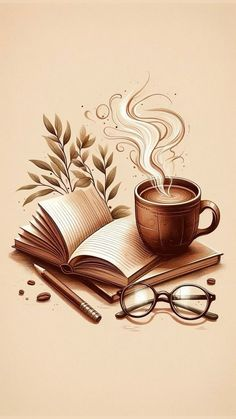

Mis Libros Recomendados
En Entre Líneas quiero compartir los libros que más me ayudaron. Estos tres los elegí porque cada uno me dejó una enseñanza diferente.

Mi top 3 de libros
Los puse en orden, del que más me marcó al que menos me marcó:
Ir directo a:
- El Principito - Antoine de Saint-Exupéry
- Cien Años de Soledad - Gabriel García Márquez
- Hábitos Atómicos - James Clear
Si solo puedes leer uno, empieza por el primero. Es corto y muy fácil de entender.
1. El Principito
Este es mi libro favorito de todos. Lo leí cuando no tenía ganas de nada y me ayudó mucho.
De qué trata
Es la historia de un principito que viaja por planetas y conoce gente muy rara. Al final aprende que lo esencial es invisible a los ojos.
Por qué lo recomiendo
Lo recomiendo porque es corto, fácil de leer y te deja pensando mucho tiempo después de terminarlo.
Además, es un libro que puedes leer dos veces y entender algo nuevo cada vez.
Este libro lo leí en el colegio y fue el que me hizo empezar a amar la lectura.2. Cien Años de Soledad
Este es el libro más famoso de Colombia. Al principio me dio miedo porque es largo, pero cuando lo empecé no pude parar.
De qué trata
Cuenta la historia de la familia Buendía en Macondo. Es un libro donde todo se repite, pero nada es igual.
Por qué lo recomiendo
Porque es de un autor colombiano y te hace sentir orgulloso de nuestra cultura.
Es un libro que te hace imaginar todo, como si estuvieras viendo una película en tu cabeza.
Es un poco largo, pero vale totalmente la pena.3. Hábitos Atómicos
Este es el libro más práctico de los tres. No es un cuento, es más como una guía para mejorar tu vida.
De qué trata
Habla de cómo los pequeños cambios todos los días pueden cambiar tu vida por completo.
Por qué lo recomiendo
Porque me ayudó cuando sentía que nada valía la pena, a volver a tener una rutina y a sentirme mejor.
Si te sientes desmotivado, este libro es el mejor para empezar.
Este es el libro más práctico de los tres.Más libros gratis
Si quieres seguir leyendo, aquí puedes encontrar muchos libros gratis:
Ver más libros gratis en Project Gutenberg